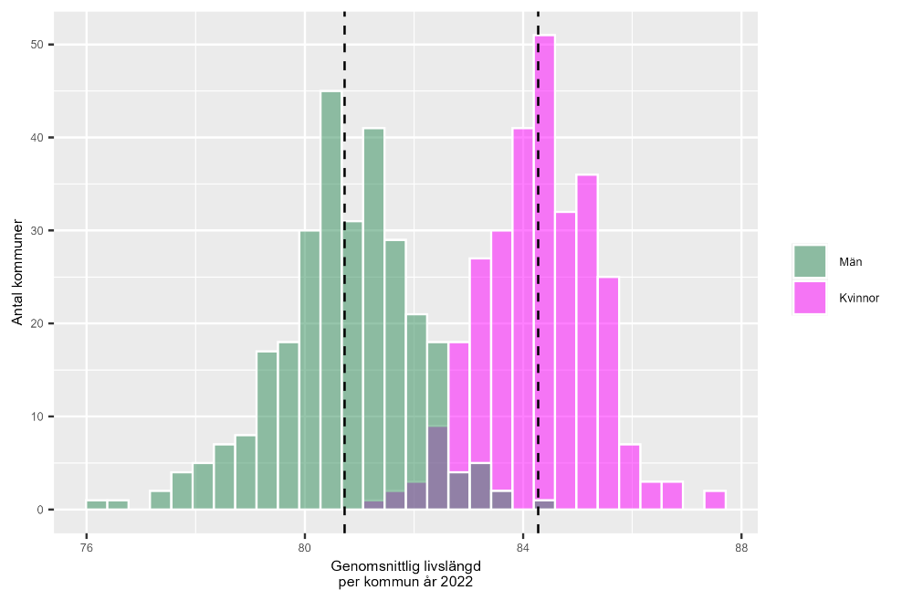

44 Statistisk analys 1
44.0.1 Begrepp
- Statistiskt test: Beräkning rörande sannolikheten om ett påstående stämmer eller ej.
- Punktestimat: Estimat av ett specifikt värde från populationen, som medelvärde eller varians.
- Standardfel: Mått på osäkerheten i ett punktestimat (engelska standard error).
- Medelvärdets standardfel: Estimerad osäkerhet i medelvärdets estimat. Beräknas som \(s_{x}/n^{\frac{1}{2}}\) där \(s_{x}\) är estimerad standardavvikelse och \(n\) är antal observationer i urvalet.
44.0.2 Teori
Under denna kurs har vi introducerat skillnaden mellan det vi kallar populationen (det vi vill studera), vars värden i regel är okända, och den urvalsdata vi har tillgång till (det vi kan studera). Nu ska vi närmare koppla ihop dessa begrepp med det vi gått igenom om sannolikhetsfördelningar.
44.0.2.1 Statistiskt test
Ett statistiskt test är en kvantitativ beräkning där vi räknar på sannolikheten för om ett påstående stämmer eller ej. Vi kommer gå igenom två typer av test: Punktestimat och intervallskattning. Punktestimat innebär att vi räknar på ett enda värde, som medelvärde = 82 år. Intervallskattning syftar på att vi räknar på sannolikheten att ett värde (till exempel medelvärdet) befinner sig inom ett intervall, som 80 och 84 år. I detta avsnitt går vi igenom punktestimat. I nästa avsnitt lär vi oss intervallskattning. Vi ska demonstrera vad ett statistiskt test är genom att jämföra två medelvärden. Figur 1 illustrerar den genomsnittliga livslängden för män respektive kvinnor i Sveriges 290 kommuner. De streckade vertikala linjerna mitt i staplarna beskriver medelvärdet för kvinnor respektive män i observationerna i diagrammet. Lite förenklat kan vi se att observationerna för män respektive kvinnor följer ungefär en normalfördelning vardera. Medelvärdet för kvinnor ligger tydligt högre än medelvärdet för männen. Men det vi tittar på här är medelvärden per kommun. Och det är medelvärden beräknade vid en specifik tidpunkt, som avser att beskriva hur det såg ut i Sverige 2022. Säg nu att detta är urvalsdata för en större population. Vi kan till exempel tänka oss att det är en uppskattning av hur det ser ut i Sveriges befolkning idag. Eller kanske är ett exempel på män och kvinnor i de nordiska länderna. Eller kanske ett exempel på skillnaden i livslängd mellan män och kvinnor under hela 2020-talet. Utifrån våra urvalsdata vill nu veta om medelvärdet i livslängd för den större populationen kvinnor och män verkligen skiljer sig.
Figur 1: Genomsnittlig livslängd för män respektive kvinnor i Sveriges kommuner

Förklaring: Staplarna visar spridningen i genomsnittlig medellivslängd i Sveriges kommuner. En observation = ett medelvärde per kommun. Den genomsnittliga livslängden varierar både bland män och kvinnor. Staplar överlappar varandra något, vilket beror på att i de kommuner där män lever som längst i genomsnitt, är denna livslängd högre jämfört med de kommuner där kvinnor i genomsnitt lever som kortast. Detta kan vi pröva genom ett statistiskt test. Vi formulerar detta som att vi vill beräkna sannolikheten för om populationernas medelvärden är desamma: \(\mu_{\text{kvinnor}\ } = \mu_{\text{män}}\). Vi vet inte populationsvärdena. Vi har observationer som eventuellt kan beskrivas som att de är hämtade från två separata populationer, det vill säga populationerna med mäns och kvinnors genomsnittsinkomster per kommun. För att skatta sannolikheten för att de två populationerna har samma medelvärde utgår vi från att vi jämför två normalfördelade variabler och beräknar ett \(z\)-värde. Vårt beräknade \(z\) jämför vi mot standardnormalfördelningen för att därigenom få sannolikheten att de två medelvärdena i våra urvalsdata tillhör samma population. Här är ekvationen för att beräkna detta \(z\)-värde:
\[z = \frac{{\bar{X}}_{\text{kvinnor}\ } - {\bar{X}}_{\text{män}\ }}{\left( \frac{s_{\text{kvinnor}\ }^{2}}{n_{\text{kvinor}\ }} + \frac{s_{\text{mann}\ }^{2}}{n_{\text{man}\ }} \right)^{\frac{1}{2}}} \tag{1}\]
där \(s^{2}\) är varians (standardavvikelse i kvadrat) för respektive grupp och \(n\) är antal observationer. För observationerna i figur 1 har vi följande värden som vi behöver till beräkningen: \({\overline{X}}_{kvinnor} = 83,95\) \({\overline{X}}_{män} = 80,38\) (2) \(s_{kvinnor}^{2} = 1,032\) \(s_{män}^{2} = 1,663\) \(n_{kvinnor} = 290\) \(n_{män} = 290\) Med dessa värden kan vi beräkna följande \(z\)-värde:
\[z = \frac{{\bar{X}}_{\text{kvinnor}\ } - {\bar{X}}_{\text{män}\ }}{\left( \frac{s_{\text{kvinnor}\ }^{2}}{n_{\text{kvinnor}\ }} + \frac{s_{\text{man}\ }^{2}}{n_{\text{mãn}\ }} \right)^{\frac{1}{2}}} \approx \frac{83,95 - 80,38}{\left( \frac{1,032}{290} + \frac{1,663}{290} \right)^{\frac{1}{2}}} \approx 37,045 \tag{3}\]
Detta \(z\)-värde kan vi jämföra mot standardnormalfördelningens kumulativa fördelningsfunktion \(F(Z \leq z)\) i det nedre diagrammet i figur 2 i föregående avsnitt 5.2. Vårt beräknade \(z\)-värde hamnar långt ut i standardnormalfördelningens svans till höger om (över) medelvärdet. Så långt att detta \(z\)-värde inte ryms på diagrammets horisontella axel. Detta indikerar att det är mycket osannolikt att de två populationerna (män och kvinnors livslängd) har samma medelvärde. Detta är resultatet för vårt statistiska test. Testet stödjer alltså inte att populationernas medelvärden är samma. Det verkar alltså finnas en skillnad. Notera att det inte säger oss någonting om varför siffrorna ser ut så här. Det visar inte på något orsakssamband eller någon förklaring. Det indikerar endast att det i statistisk bemärkelse, givet den data vi använt, är osannolikt att populationernas medelvärden, \(\mu_{män}\) och \(\mu_{kvinnor}\), är lika.
44.0.2.2 Statistisk inferens och punktestimat
Statistisk inferens eller statistisk slutledning, kallas den process där vi med hjälp av ett empiriskt datamaterial försöker dra slutsatser om okända egenskaper i en population. Detta är vad vi gör när vi försöker estimera värdena i en population, genom att beräkna resultat med urvalsdata. Vi kan ta medelvärdet som exempel, vilket vi introducerat tidigare. Om vi vill veta populationens medelvärde \(\mu_{X}\) för en variabel \(X\) estimerar vi detta i urvalsdatan med den vanliga formeln för medelvärde:
\[\overline{x} = \sum_{i}^{n}x_{i}\text{/}n \tag{4}\]
Om det medelvärde vi beräknar syftar till att uttala oss om en (större) population bortom den data vi har tillgång till, så är detta per definition ett estimat av populationens medelvärde. I avsnitt 5.1 och 5.2 gick vi igenom estimatorer för regressionsmodellers koefficienter. Ekvation 4 är medelvärdets estimator. Alltså, varje estimerat medelvärde är en konstant men ekvationen vi använder för att med en samling urvalsobservationer estimera medelvärdet kallar vi för estimator. Om vi vill veta populationens okända varians \(\sigma_{X}^{2}\) kan vi estimera detta med urvalsdatan som:
\[var(X) = \left( \frac{1}{n - 1} \right)\sum_{i}^{n}\left( x_{i} - \overline{x} \right)^{2} \tag{5}\]
Detta är således estimatorn för variansen. I båda dessa fall estimerar vi specifika värden, vilket kallas för att estimera punkter, punktestimat eller att skatta punkter (engelska point estimation). Både medelvärdet och variansen är exempel på punktestimat.
44.0.2.3 Medelvärdets estimator
Nu ska vi fördjupa oss lite i hur vi kan resonera kring hur och varför våra estimat kan avvika från värdena i populationen som vi vill estimera (se gärna matte 1 och introduktionen till felkällor, statistisk signifikans). Medelvärdets estimator har ett väntevärde, ett förväntat värde, vilket är definierat som populationens medelvärde:
\[E\left( \overline{x} \right) = E\left( \frac{1}{n}\sum_{i}^{n}x_{i} \right) = \mu_{X} \tag{6}\]
Detta väntevärde innebär alltså, enligt stora talens lag (se avsnitt 5.1), att givet att vi tar oändligt många urval från en population så kommer vårt estimerade medelvärde att närma sig populationens medelvärde. När vi estimerar medelvärdet \(\overline{x}\) vet vi att detta skiljer sig mer eller mindre från populationsvärdet \(\mu_{X}\). Eftersom vi inte har tillgång till all information om populationen finns det slumpmässiga fel i våra estimat. Dessa kan vara mycket små, men existerar oavsett alltid. Skillnaden mellan estimerade \(\overline{x}\) och populationens \(\mu_{X}\) kan vi beskriva som \(\overline{x} - \mu_{X}\). Så länge vi inte känner till populationsmedelvärdet \(\mu_{X}\) kan vi inte beräkna denna differens exakt.
44.0.2.4 Standardfel
För att beräkna ett mått på osäkerheten i en punktskattning kan vi estimera det som kallas för standardfel (engelska standard error). Standardfelet beräknas på olika sätt beroende på vilket punktestimat vi studerar. Medelvärdets standardfel estimeras på följande sätt:
\[\text{Standardfel } = \frac{s_{x}}{n^{\frac{1}{2}}} = \frac{s_{x}}{\sqrt{n}} = \sqrt{\frac{s_{x}^{2}}{n}} \tag{7}\]
där \(s_{x}\) är estimerad standardavvikelse för urvalsobservationerna och \(n\) är antal observationer i urvalet. Ekvation 7 visar olika sätt att skriva samma sak. Ekvationen kan läsas som att ju mindre spridning vi har i observationerna (täljaren), desto mindre blir standardfelet. Eftersom vi har antal observationer \(n\) i nämnaren innebär detta att standardfelet tenderar att minska ju fler observationer vi inkluderar i vårt urval. Båda dessa saker är logiska. Ju mindre utspridda populationens värden är, desto troligare att vår beräkning träffar rätt. Ju mer vi vet om populationen (fler observationer), desto närmare kommer vår uppskattning av populationens medelvärde vara det korrekta medelvärdet i populationen.
Övningar